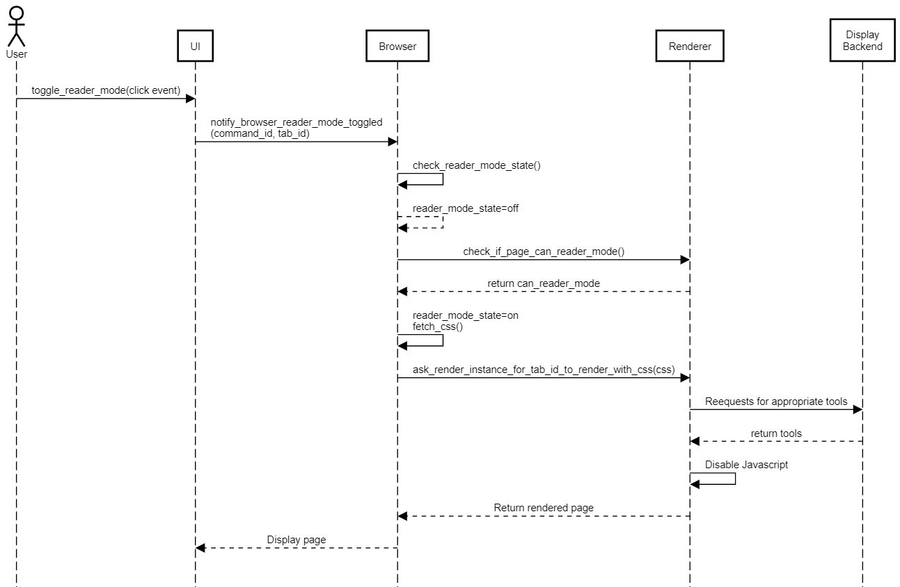
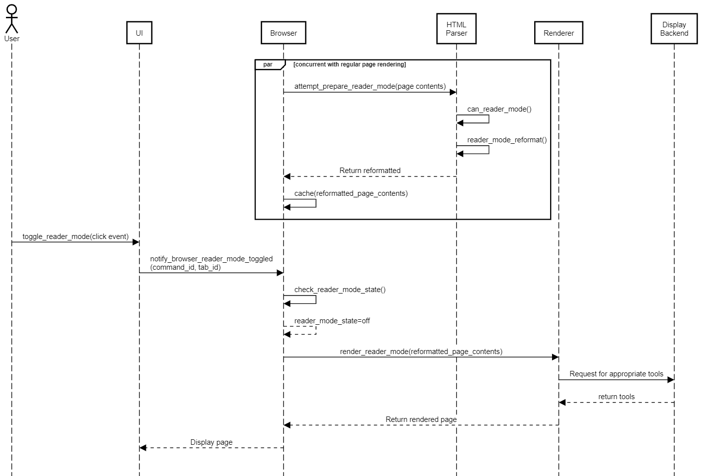

Feature Enhancement Report: Chrome Reader Mode
Abstract
This report gives an overview of Team MOCO’s idea on a possible new feature to add to the Chromium web browser. After careful discussion and research, our team decided that a reader mode would be the best feature that could be added to the Chromium web browser. Such a mode would be able to be toggled on or off at the user’s will through the use of an on screen button or a keyboard shortcut. Toggling the reader mode on would lead to a re-formatted page with bigger, easier to read fonts and the removal of any unnecessary texts/images as well as the removal of ads. Two different ways of implementing this feature were considered. The first implementation would simply reformat the page by utilizing a CSS style sheet provided by the browser. This form of implementation was the simpler and would lead to more consistent results than the second the only downside would be that it may be slower than the second implementation. The second implementation involves the parsing of the unique HTML document of each webpage and the reformatting of the page through the recognition of different HTML tags. This form of implementation is a significantly more complex but the benefit is that it is much more adaptable than the first implementation. The major downside however is that this implementation could lead to reader mode leaving out bits and pieces of a web page. Our group found this to be a significant downside and thus came to the conclusion that the first implementation would be a better choice. This report also discusses ways to potentially test the newly implemented feature. Some of these tests include the rendering time and the consistency between the reader mode version and original website.
Introduction
Our group is proposing the implementation of a simple reader mode into the Chromium web browser. Reader mode is a useful feature that removes ads and clutter from a web page to make the content more legible. The content style is completely configurable, since the user can customize the fonts, colours, and font sizes. This great feature is found in most popular web browsers, but cannot be found in the Chromium web browser. To add this feature, we will need to modify some core components of Chromium. These components include the UI, Browser, Renderer, and Display Backend.
The impact the new feature, if implemented, will have on the user interface is quite subtle. The main addition would simply be a button/hot key that will allow the toggling of the new reader mode. It is important to make the button obvious but not intrusive. This will allow the user to still feel like they are using the Chromium web browser but the button will be obvious enough so that new users can see it and use it.
The new feature will also affect the way the Browser operates. Since the browser engine is still the central control hub of the Chromium web browser, any new operations caused by the implementation of reader mode will have to pass through the browser engine. In the first implementation, the browser will fetch the CSS style sheet from local storage any time reader mode is toggled on. It will also store the status of reader mode; whether it is on or off. Lastly any event communication is done through the browser. For the second implementation, the browser will be used to parse the HTML doc of the website while the original page is parsed, rendered, and loaded.
The renderer will still maintain its original functionality. However, by using the first implementation of the reader mode, it must also be able to complete its functions with the new CSS style sheet provided by the browser.
In conclusion, we believe that implementation 1 was the more appropriate solution. It provided a simpler and more stable way to implement the reader mode than implementation 2. We believe that our new feature will greatly increase the user’s experience while they use the Chromium web browser, and will allow Google stay ahead of its competitors by keeping up with new features that other browser have.
Implementation 1
Overview
This implementation utilizes CSS styling from a CSS file provided by the Browser to format the page as needed. The reformatted page is created when reader mode is toggled on and cached when it is toggled off. It does not utilize the concurrency of Chromium in order to keep things simple and easy to maintain.
There are several components affected by this implementation. The following is an overview of each component that is used/modified.
User Interface
Within the user interface, several things need to be done. The first of these is to draw a button and implement the necessary properties to invoke the correct command. To draw a clickable button, the graphics library Skia will be used for the geometry of the button as well as the theming. A unique command ID will have to be registered as a valid command, which will ensure its consistency with the rest of Chromium’s event handling.
Browser
The browser will continue its role as Chromium’s main control center. All communications will be routed through the Browser and to their respective components. In terms of the feature, the Browser will be fetching the CSS file from the local storage. It will also store the state of reader mode to keep track of whether or not it is toggled on or off. The handling of the communicated reader mode event will also be handled appropriately by the Browser.
Renderer
The renderer will retain its initial functionality of rendering the web page properly; however, it must now also be able to do it with a CSS file sent from the browser as well as provide an option to disable and enable Javascript to provide a smoother experience to the user as they read the article.
Display Backend
Although this component is not modified in any way, it is still important to mention as all drawing tools and graphics libraries used by the Renderer to render the page and the User Interface to draw the button are located in this component.
Use Case: Toggle Reader Mode On
Figure 1: User toggles reader mode on

The above use case follows the sequence of events that happen when a user toggles reader when already on a page. It follows the line of communication between each component.
When the user clicks on the toggle button, the event registered is registered as a click event. The UI notifies the browser that its been clicked by sending it two pieces of information: the tab ID, which is the unique id of each tab and the source of the event, and the command ID, which is registered specifically for the reader toggle command.
Once the Browser receives such information, it checks its command database to determine the course of action to be taken. It determines that the action to be taken is to toggle reader mode, and first looks at the current state of reader mode. Since the user is toggling it on this case, the initial state of reader mode is off. The Browser then checks with the Renderer to see if the page can be reformatted to the reader mode style. The Renderer determines that the web page can be formatted to reader mode and the browser, upon receiving that information, fetches the reader mode CSS file from storage and sets the reader mode state as on.
The Renderer instance for that tab receives the CSS file and other data necessary and renders the page according to the CSS file. To render the page, it requests drawing tools from the graphics libraries found in the Display Backend. The Renderer also disables the Javascript for that site. When everything is completed, all the data is returned to the Browser which relays it back to the UI which displays the rendered page.
Implementation 2
Overview
The second implementation will apply the reader mode using an HTML parser that selectively renders elements. Upon loading the web page, the Browser will concurrently parse the HTML file, looking for certain tags. Once the user turns on reader mode, the newly parsed HTML file will be rendered and swapped in with the regular page render. This method of implementation is a bit more difficult to achieve since we will need to manually handle every single case to decide how the page will render in reader mode.
User Interface
Like the first implementation, we will need to render a button on the interface and add an event listener to tell us when it is clicked. We will again use Skia to render the various elements, like the button and customization features. This portion of the implementation is identical to the first implementation UI changes, so please refer to above.
Browser
The Browser will be used to concurrently parse the reader mode version of the page while the regular page is parsed and rendered. To do this, it will create a separate renderer instance for that tab, making a total of two render instances per tab when a page is loaded. Apart from that, like the first implementation, event handlers will have to be added to handle the reader mode toggle. The rendered reader mode page will be stored in cache until reader mode is toggled to enable a quick retrieval of the required web page data.
Renderer
The renderer will need to be used once the user switches to reader mode. The modified HTML file in cache will need to be rendered for the user once the reader mode is activated.
Display Backend
Once again, this component will be needed to handle the drawing tools for our system. This is not a primary component of the feature, but it will be used for some functionality.
Use Case
Figure 2: User toggles reader mode on valid site  The above use case details what happens when a user toggles reader mode on in this implementation. Two things happen at the same time when a user toggles on reader mode. The first is that the renderer instance detailed at the top of the diagram checks if reader mode is compatible with the page and since it is, it reformats it. The second render instance does the actual rendering of the page when toggled and returns it to the user to see.
SAAM Analysis
Stakeholders
There are many individuals, groups, and organizations that have an interest in the Chrome web browser. Many of these people would be affected by the addition of a reader mode, whether it is a positive or negative impact. Firstly there are the users who use chrome. With the addition of reader mode, they would be able to enjoy their experience due to a much clearer format and the lack of distractions such as advertisements. Web Page owners would also be affected, as the reader mode changes the pages they have designed. The new mode would remove the ads they have placed for revenue, which ultimately could reduce the income they receive for designing the pages; they wouldn’t be as pleased with this change. The Chrome/Chromium team would also be affected. Changes that the implementations bring to the architecture would change the system’s modifiability, portability, interoperability, testability. Google’s Adsense would also be heavily impacted by this change. Adsense designates what ads show up where do to relevance based on comparing the website to the ad content. This helps ads better target users, and a reader mode would block many of these ads designated towards article readers. This is the most likely reason for Google not having implemented a reader mode themselves. This leads into third party advertisers also having a stake in an added reader mode, with similar feelings to Google’s Adsense team. Lastly, there’s us, the developers. With reader mode being our work, we would have a stake in hoping that it will succeed, and not end in failure.
Non-Functional Requirements
Non-Functional Requirements are essential with any given product, as they are the extra things that make a product more user-desired. For the Chrome Reader Mode one non-functional requirement would be that the display would have to render in a quick time, preferably in less than 5 seconds so the user doesn’t feel like the system is slow. Next, the button that turns on the reader mode must be very user-friendly. It should be obvious what the function of the button is, with a fairly obvious image, and a tooltip designating it as a Reader Mode. The button must also be easy to find, as hiding it under layers of other buttons or options will only make it confusing, and reduce usage. Lastly, the reader mode should be consistent between websites. If one website causes the reader mode to look a standard way, then all the other converted pages should also look this way. This will keep everything clear and clean for the user.
Advantages and Disadvantages
Implementation 1
| Advantages | Disadvantages |
|---|---|
| Interoperability: Easy to implement as it is a very simple concept | Interoperability: Modifies the two largest and complex components |
| Maintainability: In line with the rest of Chromium’s architecture. No need to add new components or excessively modify them | Portability: Some websites will not work with the general CSS file template |
| Robustness/stability: Low likelihood of breaking an existing feature because no new dependencies added. Coupling maintained | Performance: May be slower in toggling reader mode since all communications go through the browser rather than directly to affected components |
| Performance: Less lag because of disabled Javascript |
Implementation 2
| Advantages | Disadvantages |
|---|---|
| Portability: Can be applied to almost any webpage | Interoperability: Much more difficult |
| Interoperability: Does not require any other files to be imputed/originally formatted | Portability: Parse can fail to recognise what is the main article |
| Performance: Increased performance and reduced response time due to UI communicating directly to renderer | Portability: Will occasionally omit small paragraphs due to thinking they are text advertisements |
| Overall, could be less consistent |
Comparison
Implementation 1 and 2 both have many advantages and disadvantages. Both have Interoperability and Performance advantages, for different reasons though. Both also have portability and interoperability disadvantages. This means that parts that stick out for each are as follows: Implementation 1: Maintainability, Stability advantages, and performance disadvantage; Implementation 2: Portability advantage, and extra portability disadvantage, as implementation has 2. This leaves Implementation 1 with two advantages and one disadvantage, and Implementation 2 with one advantage and one disadvantage.
Chosen Implementation
Verdict and Rational
The implementation that we chose was Implementation 1, due to its simplicity and ease of implementation. The SAAM Analysis also suggested that the advantages of the chosen implementation outweighs its disadvantages. In addition, because of the increased complexity of Implementation 2, there is a high likelihood that Implementation 2 would have resulted in an unstable and perhaps even unusable feature.
Low Level Discussion
This implementation will be implemented using C++ for consistency with the rest of the Chromium browser code. It will attempt to use as many existing dependencies as possible to maintain the same amount of coupling.
User Interface
The first step in implementing this implementation is to modify the User Interface. This allows the User to see and click on a clickable button to toggle reader mode. Creating the button will require us to create/modify the following files:
| File Name | Action | Description |
|---|---|---|
/chrome/browser/ui/views/toolbar/reader_mode_button.h |
Add | A header file is needed to provide the template of the actual implementation of the button. It will utilize tools found in /ui and use the general button template provided in /chrome/browser/ui/views/toolbar/toolbar_button.cc |
/chrome/browser/ui/views/toolbar/reader_mode_button.cc |
Add | The implementation of the actual button. It will use the template provided by reader_mode_button.h and any other tools used by it. |
/chrome/chrome_command_ids.h |
Modify | This file contains a list of all valid commands registered by Chromium. We need to add a new unique valid ID to this list so Chromium can identify the command when it is called. |
Event listeners are already existent in the source code so there is no need to add or modify the files pertaining to it.
Browser
The browser will need to be modified so that when the UI can determine when the reader mode is enabled. This will allow the browser to determine which tab to run the reader mode on. It will communicate with the web pages and receive the HTML and css files that will be used by the reader utility in the renderer. A new file will be added with the specific purpose of getting the HTML and css files and sending them onward when reader mode is enabled.
Renderer
The renderer will need to be modified so that it can communicate with the browser and render so that the new reader mode version of the web page can be sent to the Display. The new reader mode will be a separate entity that will directly communicate with the renderer. This includes components such as the javascript interpreter and XML parser. It will parse through the HTML file to look for any relevant tags such as <article>. Identifying these tags will allow distinguish what to present and not present when reader mode is toggled. This will create a new clean version of the web page.
Potential Risks
Although this feature is relatively harmless, there are some risks involved with it. First of all, Google is a company that runs on its ad business, known as Google AdSense. By removing ads from their web browser, this feature is in direct conflict with the fundamental nature of Google’s business model. Aside from that, the risks are very minor and will only be small inconveniences or actions that can be undone. For example, some pages may not be compatible with our reader mode feature. This may cause some pages to render poorly, but the user can easily just turn reader mode off and they will be able to continue browsing the page as normal.
Test Plan
There several things we believe should be tested if our new feature were to be implemented. First, we should test the functionality of the button/keyboard shortcut. Does pressing the button/keyboard shortcut lead to the re-rendering of the desired web page? Since this is a simple functionality test, we would just check if the layout of the page is triggered by the button/keyboard shortcut, regardless of whether or not it displays exactly what we want. Secondly, we should test how accurate the reader mode is in displaying the website. This can be done by comparing what reader mode presents to the user and what the website presents to the user when not toggled into reader mode. We would look for any discrepancies in the two versions and if there were any, locate what caused the discrepancies to exist. However, due to the fact that we will simply be swapping out CSS style sheets, there should not be too many differences between reader mode and non-reader mode in terms of content presented. The last thing we would test is the compatibility of the CSS style sheet. This would just be to ensure that the majority (85%-90%) of regularly accessed websites could handle the CSS style sheet.
Conclusion
In conclusion, we learned a lot about the work to implement a small feature like a simple reader mode. It is important to propose a couple of different implementations and to analyze each of them to find the pros and cons of each approach to decide on the best way to carry forward. We suggested two ways to implement our suggested feature. The first method involved a simple swap of the web page’s CSS file with our own simplified “reader mode” CSS file. The second method is a bit more complicated and involves parsing the HTML file of the web page and picking certain elements to render depending on the type. Of our two possible implementations, we chose the first one since it is much simpler to implement and is compatible on more web pages than the second method would be.